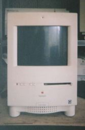

Color Classic の改造について

このColor Classicは、つい最近、ジャンク屋で見つけ、買ってしまったものです。そのとき、Color ClassicIIのものらしい、ロジックボードが、800円で売られていたので、それもいっしょに買いました。Color Classic は、CPUが68030の16MHｚで、メモリーは、30pin SIMM 2枚で最大10MBまでとなっており、動いたとしても使うのはちょっとつらい性能なので、オリジナルで動作確認が終わると、さっそくColor ClassicIIにロジックボードを交換しました。Color ClassicIIは、CPUが68030の33MHｚで、メモリーは、72pin SIMM 1枚で最大36MBまでとなっており、LCIII相当の性能を持っています。ロジックボードを交換し、立ち上げると、KT7.1ではOSが古い、といわれ最新のOSをインストールせよ、とのメッセージが出て、それ以上進みません。そこで、OS7.6をインストールしてみることにしたのですが、Color ClassicにはCDROMがついていません。外部にSCSI接続の古い2倍速CDROMをつなぎ、キーボードのCを押しながら、電源をいれるとCDROMからColor Classicが立ち上がりました。今でこそ、DOS/V機でもCDROMから立ち上がりますが、MACではずっと昔からそうなっていたのです。あとは、普通にインストールしてゆけば、大丈夫です。そのあとで、LC520のロジックボードもあったので試してみましたが、同じように使えました。このLC520は「DopingMac」に紹介されている、ロジックボード裏側のチップ抵抗を移動させる方法で、３３MHｚにクロックアップしてあります。ここまできて、すこしそのままにしておいたのですが、VGA/SVGAに改造し、４０MHｚにクロックアップした、LC575のロジックボードが余っており、電源に少し負担がかかるのが気になるけれど、使ってみることにしました。結果は良好で、画面が少し小さいけれど、640x480の表示ができます。「DopingMac」や「MysticRoom」で紹介されているように、電源を改造し、正規の大きさで画面を表示させることは、機械の寿命を短くしそうなので、やっておりません。アナログボードはそのままで、１０％くらい小さい画面で楽しんでいます。
LCIIIPDS用のEtherNetカードが手に入ったので、取り付けたところそのままで動作し、10BaseTからHUBを経由し、ダイアルアップルーターでインターネットに接続できるようになりました。このEtherNetカードは、Performa6210に付いていたもので、ColorClassicII、LCIII、LC475、LC520、LC575、LC630、Performa5210～5280、Performa6210、Performa6260、Performa6310など、LCIIIPDSスロットを備える機種で共通に使うことができます。
68Kマッキントッシュのページに戻る